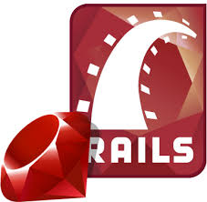
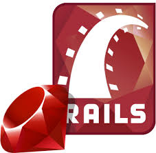
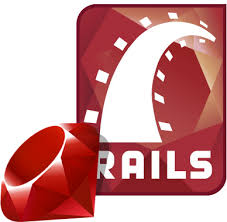
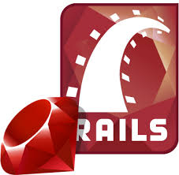

Choose the best answer to each of these questions to find out which Epicodus track is right for you!
What is your name?
Why do you want to learn coding?
What do you do in your free time?
How would your friends describe you?
What is your cleaning style?
Choose a picture:
 


 
